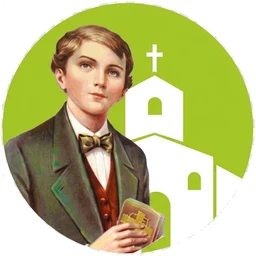

Tecnologia que conecta pessoas e transforma realidades
A Sincronize é uma plataforma completa para gerenciar projetos, doações, pessoas e resultados, com tudo o que você precisa, em tempo real.
- Mais organização
- Gestão simplificada
- Mais impacto social
- Dados em tempo real

Instituições parceiras
Escolha uma causa e fale diretamente com a instituição. Use as setas ou arraste para conhecer todas.
A Sincronize facilita o contato. Confirme diretamente com cada instituição os canais oficiais, os itens aceitos e os procedimentos para doação.
Transforme grandes doações em um impacto ainda maior.
Instituições parceiras utilizam nossa plataforma para leiloar itens especiais. Participe dos leilões ativos ou traga o leilão da sua ONG para a Sincronize, com total transparência e lances em tempo real.
Sua instituição possui itens valiosos para arrecadação?
Realize leilões virtuais com transparência e lances em tempo real.
Itens, valores, instituições e quantidade de lances são exemplos demonstrativos.
Moda e objetos com segunda chance, renda para quem precisa.
Cada brechó é vinculado a uma instituição: as peças são doadas para ela, vendidas aqui e todo o valor arrecadado vai para a campanha daquela instituição.
-
1. Doação de peças
A comunidade doa roupas, livros e objetos à instituição.
-
2. Venda no brechó
As peças ganham vitrine no brechó online da instituição.
-
3. Renda para a causa
O valor das vendas financia a campanha da instituição.
Escolha o brechó que você quer apoiar:
Sua instituição recebe doações de roupas e objetos?
Transforme essas doações em renda com um brechó online próprio, com vitrine, metas e prestação de contas.
Peças, preços, campanhas e valores arrecadados são exemplos demonstrativos.
Empresas que acreditam no impacto social.
Nossos patrocinadores ajudam a manter os leilões, os brechós solidários e a rede de instituições funcionando, sem custo para quem mais precisa.
Sua empresa quer apoiar essa rede?
Coloque sua marca ao lado de instituições que transformam vidas, com cotas master, ouro ou de apoio.
Com exceção de Lourdinas e Microgames, os patrocinadores exibidos são fictícios, apenas para demonstração.
Mais eficiência para o seu projeto.
Simplifique processos, organize informações e tenha mais controle sobre o impacto das suas ações.
- Gestão de projetos e atividades
- Controle de doações financeiras e materiais
- Cadastro de pessoas e voluntários
- Relatórios de impacto e resultados
- Conformidade com a LGPD
- Indicadores em tempo real
- Interface intuitiva
- Foco no cuidado humano
Sobre a Sincronize
Na Sincronize, acreditamos que a tecnologia tem o poder de conectar pessoas, otimizar processos e transformar realidades.
Nascida do encontro entre inovação tecnológica e compromisso social, nossa startup é especializada no desenvolvimento de soluções Web inteligentes voltadas para a gestão do Terceiro Setor. Nosso objetivo é simplificar a rotina de instituições filantrópicas e ONGs, oferecendo ferramentas completas que integram desde o acompanhamento pedagógico e nutricional de assistidos até o controle administrativo e a captação de recursos.
Combinando segurança, conformidade com a LGPD e uma interface intuitiva, desenvolvemos softwares que transformam dados em indicadores estratégicos em tempo real. Assim, permitimos que os gestores tomem decisões mais ágeis, transparentes e assertivas, garantindo que o foco principal permaneça onde realmente importa: o cuidado e o desenvolvimento humano.
Fale com a Sincronize